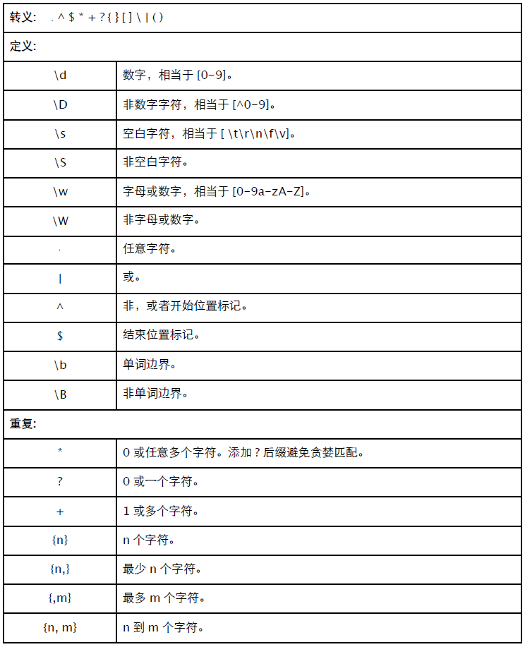
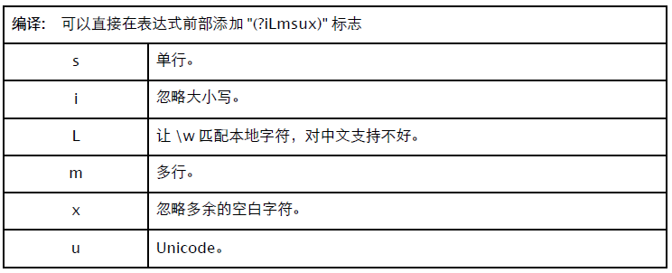

字符串
re
正则表达式是处理字符串最重要的一种手段。


正则函数
re 有几个重要的函数：
- match(): 匹配字符串开始位置。
- search(): 扫描字符串，找到第一个位置。
- findall(): 找到全部匹配，以列表返回。
- finditer(): 找到全部匹配，以迭代器返回。
match 和 search 仅匹配一次，匹配不到返回 None。
>>> import re
>>> s = "12abc345ab"
>>> m = re.match(r"\d+", s)
>>> m.group(), m.span()
('12', (0, 2))
>>> m = re.match(r"\d{3,}", s)
>>> m is None
True
>>> m = re.search(r"\d{3,}", s)
>>> m.group(), m.span()
('345', (5, 8))
>>> m = re.search(r"\d+", s)
>>> m.group(), m.span()
('12', (0, 2))findall 返回列表 (或空列表)，finditer 和 match、search 一样返回 MatchObject 对象。
>>> ms = re.findall(r"\d+", s)
>>> ms
['12', '345']
>>> ms = re.findall(r"\d{5}", s)
>>> ms
[]
>>> for m in re.finditer(r"\d+", s): print m.group(), m.span()
...
12 (0, 2)
345 (5, 8)
>>> for m in re.finditer(r"\d{5}", s): print m.group(), m.span() # 返回空列表
...
>>>MatchObject
match、search、finditer 返回的对象 —— MatchObject。
- group(): 返回匹配的完整字符串。
- start(): 匹配的开始位置。
- end(): 匹配的结束位置。
- span(): 包含起始、结束位置的元组。
- groups(): 返回分组信息。
- groupdict(): 返回命名分组信息。
>>> m = re.match(r"(\d+)(P<letter>[abc]+)", s)
>>> m.group()
'12abc'
>>> m.start()
0
>>> m.end()
5
>>> m.span()
(0, 5)
>>> m.groups()
('12', 'abc')
>>> m.groupdict()
{'letter': 'abc'}group() 可以接收多个参数，用于返回指定序号的分组。
>>> m.group(0)
'12abc'
>>> m.group(1)
'12'
>>> m.group(2)
'abc'
>>> m.group(1,2)
('12', 'abc')
>>> m.group(0,1,2)
('12abc', '12', 'abc')start()、end() 和 span() 同样能接收分组序号。和 group() 一样，序号 0 表示整体匹配结果。
>>> m.start(0), m.end(0)
(0, 5)
>>> m.start(1), m.end(1)
(0, 2)
>>> m.start(2), m.end(2)
(2, 5)
>>> m.span(0)
(0, 5)
>>> m.span(1)
(0, 2)
>>> m.span(2)
(2, 5)编译标志
可以用 re.I、re.M 等参数，也可以直接在表达式中添加 "(iLmsux)" 标志。
- s: 单行。"." 匹配包括换行符在内的所有字符。
- i: 忽略大小写。
- L: 让 "\w" 能匹配当地字符，貌似对中文支持不好。
- m: 多行。
- x: 忽略多余的空白字符，让表达式更易阅读。
- u: Unicode。
试试看。
>>> re.findall(r"[a-z]+", "%123Abc%45xyz&")
['bc', 'xyz']
>>> re.findall(r"[a-z]+", "%123Abc%45xyz&", re.I)
['Abc', 'xyz']
>>> re.findall(r"(i)[a-z]+", "%123Abc%45xyz&")
['Abc', 'xyz']下面这么写好看多了吧？
>>> pattern = r"""
... (\d+) # number
... ([a-z]+) # letter
... """
>>> re.findall(pattern, "%123Abc\n%45xyz&", re.I | re.S | re.X)
[('123', 'Abc'), ('45', 'xyz')]组操作
命名组：(P
>>> for m in re.finditer(r"(P<number>\d+)(P<letter>[a-z]+)", "%123Abc%45xyz&", re.I):
... print m.groupdict()
...
{'number': '123', 'letter': 'Abc'}
{'number': '45', 'letter': 'xyz'}无捕获组：(:...)，作为匹配条件，但不返回。
>>> for m in re.finditer(r"(:\d+)([a-z]+)", "%123Abc%45xyz&", re.I):
... print m.groups()
...
('Abc',)
('xyz',)反向引用：\
>>> for m in re.finditer(r"<a>\w+</a>", "%<a>123Abc</a>%<b>45xyz</b>&"):
... print m.group()
...
<a>123Abc</a>
>>> for m in re.finditer(r"<(\w)>\w+</(\1)>", "%<a>123Abc</a>%<b>45xyz</b>&"):
... print m.group()
...
<a>123Abc</a>
<b>45xyz</b>
>>> for m in re.finditer(r"<(P<tag>\w)>\w+</(P=tag)>", "%<a>123Abc</a>%<b>45xyz</
b>&"):
... print m.group()
...
<a>123Abc</a>
<b>45xyz</b>正声明 (=...)：组内容必须出现在右侧，不返回。 负声明 (...)：组内容不能出现在右侧，不返回。 反向正声明 (<=)：组内容必须出现在左侧，不返回。 反向负声明 (<)：组内容不能出现在左侧，不返回。
>>> for m in re.finditer(r"\d+(=[ab])", "%123Abc%45xyz%780b&", re.I):
... print m.group()
...
123
780
>>> for m in re.finditer(r"(<\d)[a-z]{3,}", "%123Abc%45xyz%byse&", re.I):
... print m.group()
...
byse更多信息请阅读官方文档或更专业的书籍。
修改
split: 用 pattern 做分隔符切割字符串。如果用 "(pattern)"，那么分隔符也会返回。
>>> re.split(r"\W", "abc,123,x")
['abc', '123', 'x']
>>> re.split(r"(\W)", "abc,123,x")
['abc', ',', '123', ',', 'x']sub: 替换子串。可指定替换次数。
>>> re.sub(r"[a-z]+", "*", "abc,123,x")
'*,123,*'
>>> re.sub(r"[a-z]+", "*", "abc,123,x", 1)
'*,123,x'subn() 和 sub() 差不多，不过返回 "(新字符串，替换次数)"。
>>> re.subn(r"[a-z]+", "*", "abc,123,x")
('*,123,*', 2)还可以将替换字符串改成函数，以便替换成不同的结果。
>>> def repl(m):
... print m.group()
... return "*" * len(m.group())
...
>>> re.subn(r"[a-z]+", repl, "abc,123,x")
abc
x
('***,123,*', 2)StringIO
提供类文件接口的字符串缓冲区，可选用性能更好的 cStringIO 版本。
>>> from contextlib import closing
>>> from cStringIO import StringIO
>>> with closing(StringIO("ab")) as f:
... print >> f, "cd"
... f.write("1234")
... print f.getvalue()
abcd
1234建议用 with 上下文确保调用 close() 方法释放所占用内存。用 getvalue() 返回字符串前，必须确保是打开状态 (closed = False)。
struct
struct 看上去有点像 format，区别是它输出的是二进制字节序列。可以通过格式化参数，指定类型、长度、字节序(大小端)、内存对齐等。
>>> from struct import *
>>> hexstr = lambda s: map(lambda c: hex(ord(c)), s)
>>> s = pack("i", 0x1234)
>>> hexstr(s) # 4 字节整数小端排列
['0x34', '0x12', '0x0', '0x0']
>>> unpack("i", s) # 还原。4660 = 0x1234
(4660,)
>>> s = pack(">i", 0x1234) # 大端
>>> hexstr(s)
['0x0', '0x0', '0x12', '0x34']
>>> s = pack("2i2s", 0x12, 0x34, "ab") # 多值。注意指定字符串长度。
>>> hexstr(s)
['0x12', '0x0', '0x0', '0x0', '0x34', '0x0', '0x0', '0x0', '0x61', '0x62']
>>> unpack("2i2s", s)
(18, 52, 'ab')还可以将结果输出到 bytearray、array、ctypes.create_str_buffer() 等缓冲对象中。
>>> fmt = "3bi2s"
>>> size = calcsize(fmt) # 计算指定格式转换所需的字节长度。
>>> buffer = bytearray(size)
>>> pack_into(fmt, buffer, 0, 0x1, 0x2, 0x3, 0x1FFFFF, "ab")
>>> buffer
bytearray(b'\x01\x02\x03\x00\xff\xff\x1f\x00ab')
>>> unpack_from(fmt, str(buffer), 0)
(1, 2, 3, 2097151, 'ab')